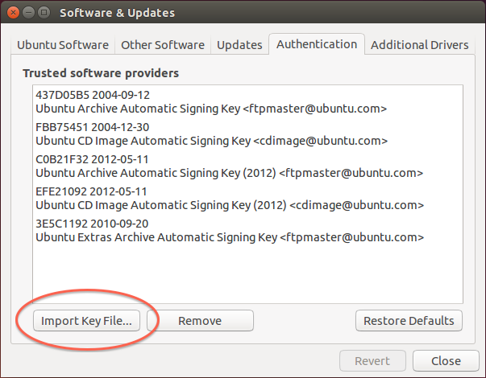
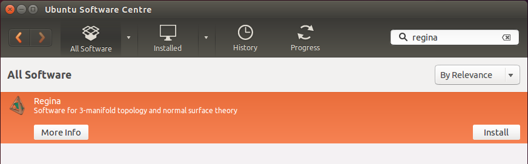
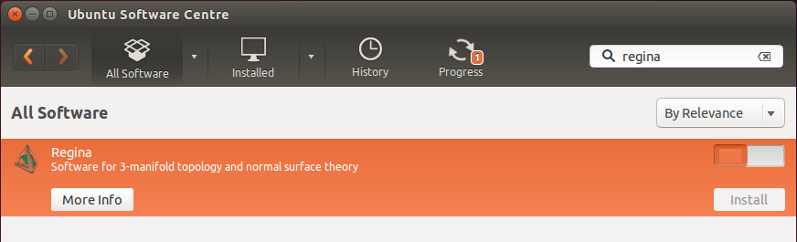

Add Regina's location to your list of repositories. To do this, open the Ubuntu Software Centre and select Edit → Software Sources.
Under Authentication, import Regina's cryptographic signing key. This helps keep your machine secure, and Ubuntu may refuse to install Regina without it. You can download Regina's cryptographic signing key here.

When you import this key file, it should show up in the list of trusted software providers as “Ben Burton <bab@debian.org>”. After the import, you can delete regina-key.txt if you like.

Under Ubuntu Software, enable the community-maintained free and open-source software (universe) if this has not been done before.

Under Other Software, click the Add... button. When Ubuntu asks you for an APT line, type:
deb http://people.debian.org/~bab/regina trusty/

Return to the Ubuntu Software Centre. You should see it automatically update the list of available packages.

Once this has finished, search for Regina. To be sure that everything is correct, you can press More Info and check that the version number is correct. Otherwise, simply press Install.

You should press More Info to make sure that the version is correct (i.e., you are getting the latest version of Regina, not the older version shipped by Ubuntu).
Now press Install and you are finished!
